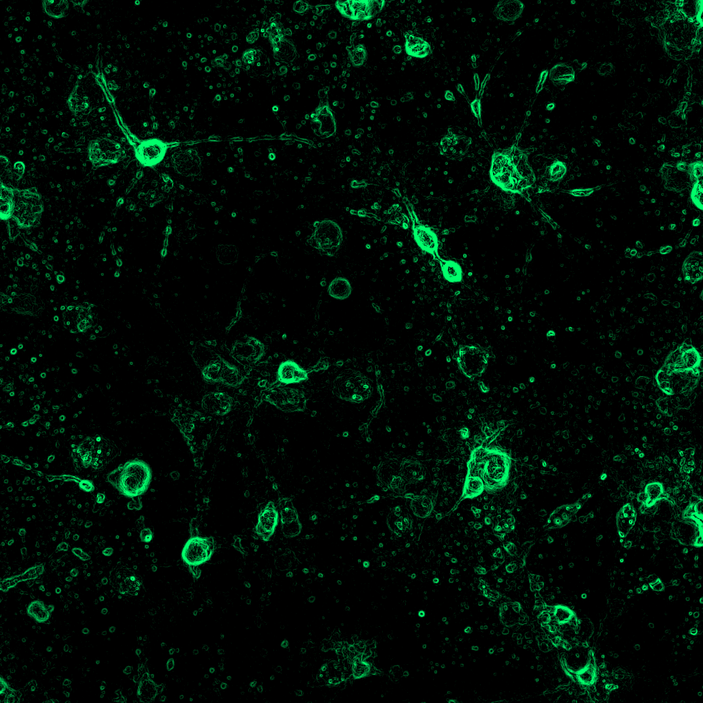
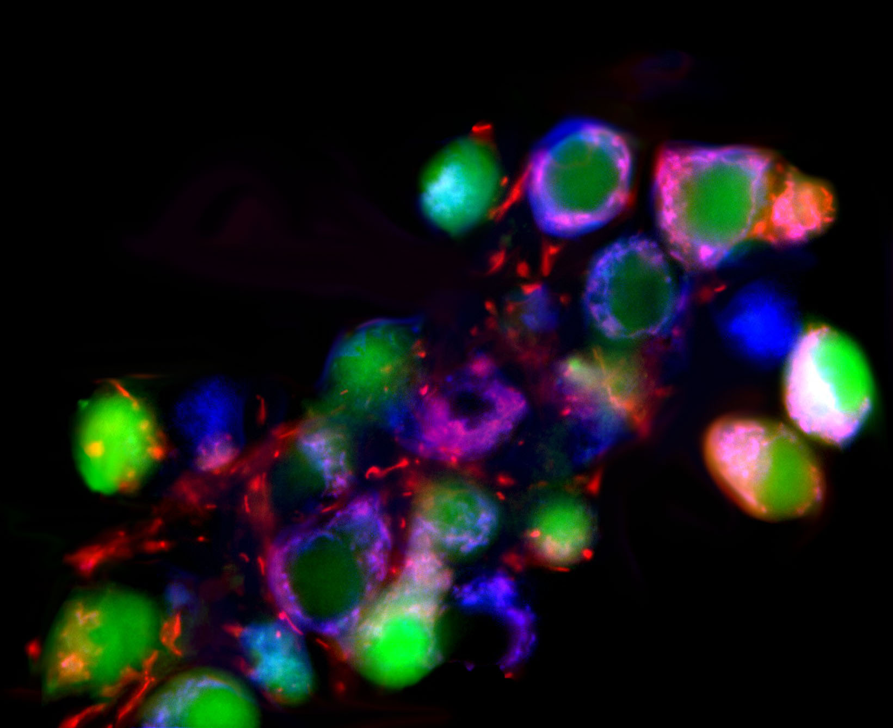
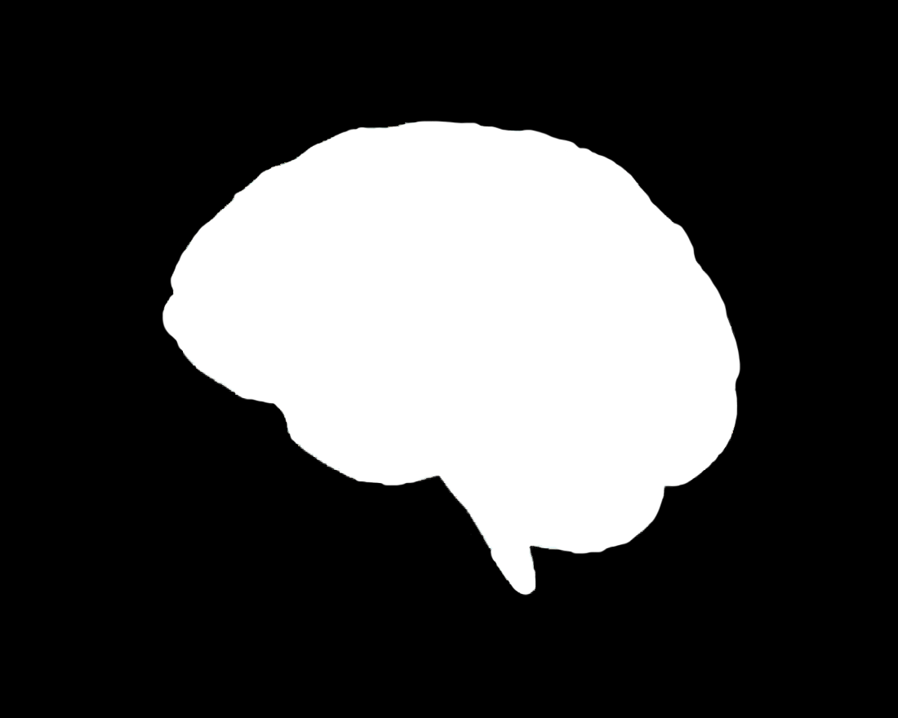

Neural population dynamics
Quantifying how population-level activity patterns emerge, stabilize, and reorganize across behavior and internal-state changes.
Research
My research integrates systems neuroscience, behavior analysis, and engineering to study how circuit dynamics generate adaptive behavior and how those dynamics are altered in dysfunction.
Major Themes

Quantifying how population-level activity patterns emerge, stabilize, and reorganize across behavior and internal-state changes.

Developing and applying nanoscale or engineered interfaces to probe mechanistic links between physical signals and neural activity.

Investigating how neural representations support flexible behavior in freely moving paradigms and under changing task demands.
Methods Stack
| Recording | Calcium imaging and population-level measurements in behaving preparations. |
|---|---|
| Behavior | Freely moving assays and custom behavioral systems with synchronized neural readouts. |
| Computation | Signal processing, dimensionality reduction, state-space analysis, and model-guided interpretation. |
| Engineering | Custom instrumentation, hardware prototyping, and robust data-acquisition pipelines. |
Questions In Progress
This page is intentionally structured so you can plug in project-specific sections, grant-supported aims, and figure panels as your current portfolio evolves.